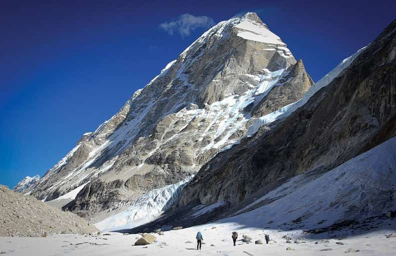
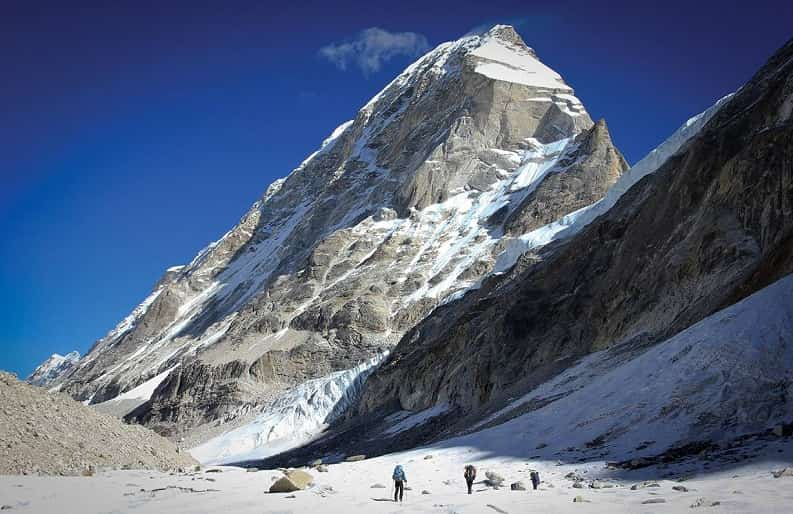
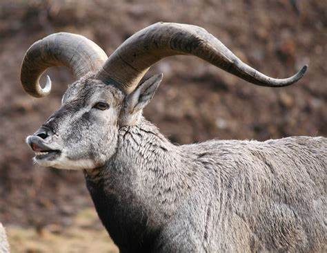
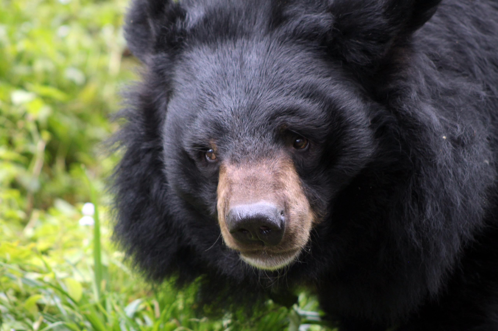

THE GREATER HIMALAYAS
Great Himalayas, also called Higher Himalayas or Great Himalaya Range, highest and northernmost
section of the Himalayan mountain ranges. It extends southeastward across northern Pakistan,
northern India, and Nepal before trending eastward across Sikkim state (India) and Bhutan and
finally turning northeastward across northern Arunachal Pradesh state (India); throughout nearly
all of its length it adjoins to the north the southern Tibet Autonomous Region of China. The range’s
total length is some 1,400 miles (2,300 km), and it has an average elevation of more than 20,000
feet (6,100 metres). The Great Himalayas contain many of the world’s tallest peaks, including
(from west to east) Nanga Parbat, Annapurna, Mount Everest, and Kanchenjunga.
 

Animal found on greater Himalaya
-
Snow Leopard

-
Himalayan Wild Yak

-
Himalayan Blue Sheep

-
Himalayan Black Bear

related tags